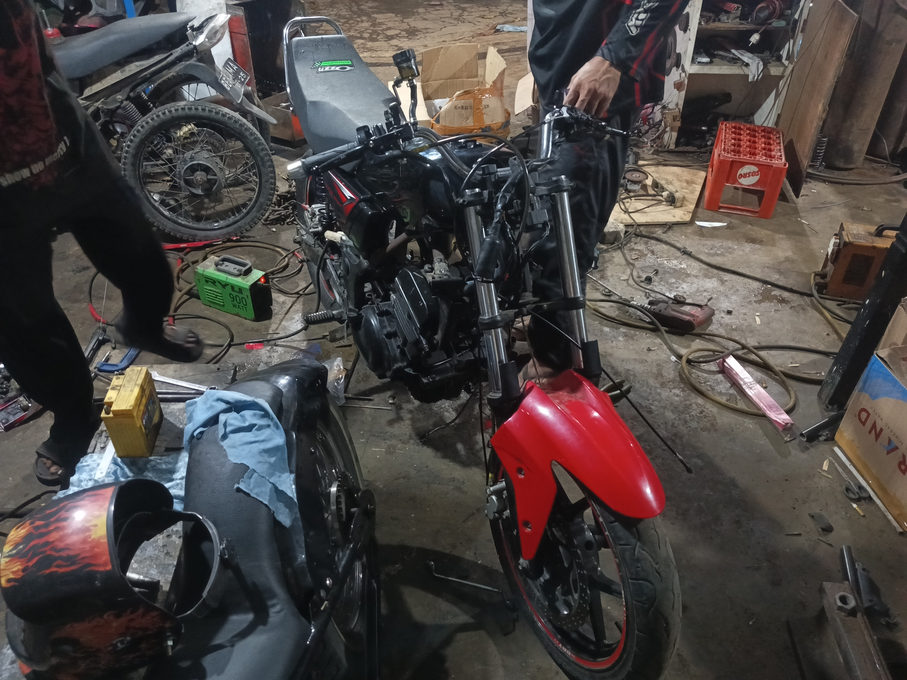
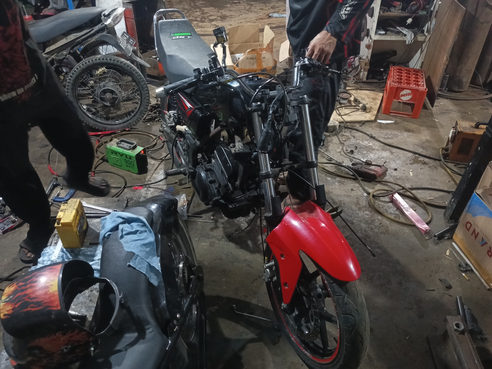

Pemasangan dan Penyesuaian Kelistrikan Speedometer RX King pada Kawasaki Ninja 250 Modifikasi
Jumat, 19 September 2025
Proses perbaikan dan penyesuaian kelistrikan sedang dilakukan untuk memasang speedometer RX King pada Kawasaki Ninja 250 yang tengah dimodifikasi menjadi model RX King.
Tahap ini membutuhkan ketelitian karena harus menyesuaikan sistem kelistrikan bawaan Ninja 250 dengan komponen speedometer RX King yang berbeda standar.
Beberapa kabel dilakukan pengukuran ulang, sambungan diperbaiki, dan jalur kelistrikan ditata ulang agar semua indikator berfungsi dengan baik.
Pekerjaan ini penting untuk memastikan speedometer dapat menampilkan data kecepatan, lampu indikator, serta fungsi lain secara akurat dan aman digunakan.
Dengan penyesuaian yang tepat, hasil modifikasi tidak hanya tampil mirip RX King dari segi visual, tetapi juga fungsional dari sisi instrumen panelnya.
Perakitan Honda C70 Tracker Mesin Shogun
Selasa, 16 September 2025

Proses perakitan motor Honda C70 menjadi tracker dengan menggunakan mesin Shogun 125 sedang berlangsung.
Rangka asli C70 dimodifikasi agar lebih kuat dan sesuai dengan karakter tracker yang identik dengan tampilan garang serta posisi berkendara yang lebih tegak dan nyaman di medan beragam.
Mesin Shogun 125 dipilih karena memiliki tenaga lebih besar, responsif, dan tangguh untuk mendukung performa tracker.
Pada tahap ini, rangka sudah mulai disesuaikan dengan dudukan mesin, suspensi belakang diperkuat, serta roda menggunakan ban dual purpose agar lebih siap dipakai di jalanan aspal maupun tanah.
Proyek ini memadukan gaya klasik Honda C70 dengan sentuhan modern dari mesin dan konsep tracker, menghasilkan motor custom yang unik, bertenaga, sekaligus tetap fungsional.
Pembuatan Spakbor British dari Fiber
Selasa, 16 September 2025


Pembuatan spakbor British dari bahan fiber dilakukan dengan proses handmade yang membutuhkan ketelitian tinggi.
Pertama, dibuat pola sesuai ukuran dan bentuk model British yang khas, lalu dicetak menggunakan media cetakan atau langsung dibentuk dari bahan fiber.
Setelah itu, lembaran fiber disusun berlapis dengan resin agar kuat, ringan, dan tetap fleksibel.
Proses pengeringan dilakukan hingga serat benar-benar padat sebelum masuk tahap perapihan.
Bagian permukaan kemudian diratakan dengan amplas, dberi dempul tipis bila perlu, lalu dilapisi epoxy sebagai dasar sebelum pengecatan.
Model spakbor British ini dipilih karena memberikan kesan klasik, rapi, dan elegan, cocok untuk berbagai jenis motor modifikasi.
Dengan bahan fiber, hasilnya lebih ringan, tahan lama, tidak mudah penyok saat terkena benturan, serta mudah dibentuk sesuai kebutuhan.
Poses Epoxy Rangka Kawasaki Ninja 250 Konversi ke RX King
Senin, 15 September 2025


Proses epoxy sedang dilakukan pada rangka Kawasaki Ninja 250 yang dimodifikasi menjadi gaya RX King.
Tahap ini berfungsi sebagai pelapis dasar untuk melindungi rangka dari karat, memperkuat struktur, sekaligus meratakan permukaan sebelum masuk ke proses cat finishing.
Epoxy sangat penting karena menentukan daya tahan jangka panjang serta kualitas hasil akhir, terutama pada modifikasi yang melibatkan perubahan besar seperti konversi Ninja 250 ke RX King.
Dengan persiapan yang rapi dan detail sejak tahap awal, hasil akhir nantinya akan terlihat lebih presisi, kokoh, dan siap menunjang performa motor setelah modifikasi seleesai.
Konsultasi Desain Lanjutan Motor Roda 3 Honda Vario 160
Senin, 15 September 2025
Proses konsultasi antara pemilik bengkel dan konsumen terkait rencana modifikasi Honda Vario 160 menjadi motor roda tiga.
Dalam tahap ini, pemilik bengkel menjelaskan rancangan serta menampung ide dan kebutuhan konsumen, termasuk penambahan model pada rangka agar lebih kokoh dan nyaman digunakan.
Diskusi semacam ini penting karena menentukan detail teknis, mulai dari posisi roda tambahan, sistem rangka pendukung, hingga aspek keamanan saat berkendara.
Dengan adanya perencanaan yang matang sejak awal, hasil modifikasi bukan hanya terlihat sesuai keinginan konsumen, tetapi juga tetap mengutamakan kekuatan, keseimbangan, dan faktor keselamatan.
Dari konsultasi inilah langkah pengerjaan selanjutnya bisa lebih terarah dan profesional.
Perbaikan Sepul Yamaha Byson & Jupiter MX
Jumat, 12 September 2025

Perbaikan sepul dilakukan dengan menggulung ulang kawat tembaga pada inti besi.
Sepul berfungsi sebagai penghasil arus listrik yang sangat penting untuk mengisi aki, menyalakan lampu, serta menunjang sistem kelistrikan motor.
Jika lilitan kawat mengalami kerusakan atau terbakar, maka daya listrik akan melemah bahkan bisa hilang sama sekali.
Proses penggulungan ulang dilakukan dengan hati-hati agar jumlah lilitan dan arah gulungan sesuai standar, sehingga arus yang dihasilkan stabil.
Setelah selesai digulung, sepul dilapisi dengan bahan isolasi khusus agar tahan panas, tidak mudah korslet, serta memperpanjang usia pemakaian.
Dengan perbaikan ini, sepul kembali befungsi normal dan motor dapat digunakan dengan sistem kelistrikan yang optimal.
Perubahan Motor Kawasaki Ninja 250 ke RX King
Rabu, 10 September 2025
 

Modifikasi ini merupakan proyek perubahan motor Kawasaki Ninja 250 menjadi bergaya RX King.
Prosesnya cukup rumit karena harus menyesuaikan rangka, kaki-kaki, serta posisi dudukan agar sesuai dengan konsep RX King yang lebih ramping dan ringan.
Beberapa bagian body dirombak,vseperti tanki, jok, dan spakbor, agar menyerupai tampilan khas RX King.
Mesin tetap menggunakan basis Ninja 250 yang bertenaga, sehingga motor tidak hanya tampil mirip RX King tetapi juga memiliki performa yang jauh lebih tinggi.
Pengerjaan membutuhkan ketelitian, mulai dari sistem kelistrikan, penempatan komponen, hingga detail finishing pada cat dan aksesoris.
Hasil akhir menghadirkan kombinasi unik: tampilan legendaris RX King yang ikonik dengan tenaga besar khas Ninja 250, membuat motor ini terlihat klasik namun tetap modern dan garang di jalanan.
Pembuatan Roda Tiga Honda Vario 160 Baru
Selasa, 09 September 2025


Proyek modifikasi ini adalah pembuatan roda tiga untuk Honda Vario 160 keluaran terbaru.
Motor matik modern ini diubah agar memiliki dua roda tambahan di bagian belakang, sehingga lebih stabil dan aman digunakan, terutama untuk kebutuhan khusus atau pemakaian jarak jauh.
Proses pengerjaan dimulai dari pembuatan rangka tambahan berbahan besi yang kuat, lalu disesuaikan dengan dudukan sasis bawaan motor agar tetap kokoh dan presisi.
Posisi roda belakang dipasang menggunakan sistem as yang dibuat khusus, lengkap dengan dudukan bearing dan rantai penggerak agar roda bisa berfungsi optimal.
Seluruh konstruksi diuji agar seimbang, mampu menahan beban, dan tidak mengganggu kinerja mesin maupun sistem CVT.
Dengan modifikasi ini, Honda Vario 160 tetap mempertahankan tenaga mesin bawaanya yang responsif, namun tampil dengan format roda tiga yang lebih stabil, fungsional, serta nyaman untuk digunakan oleh siapa saja.